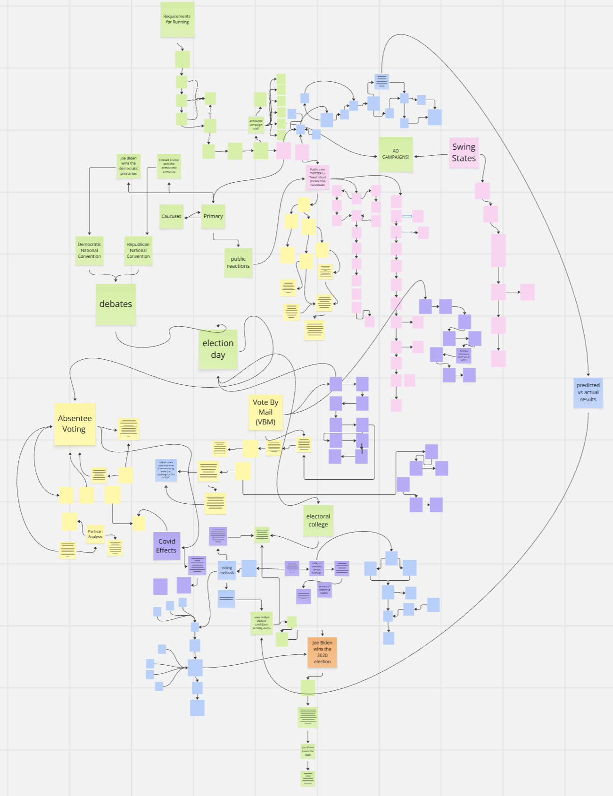
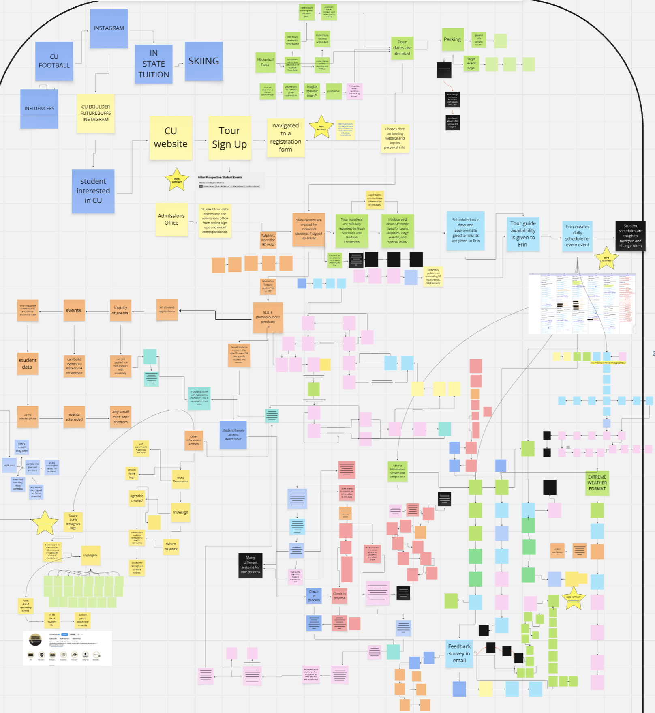
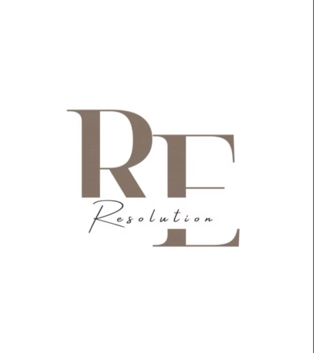
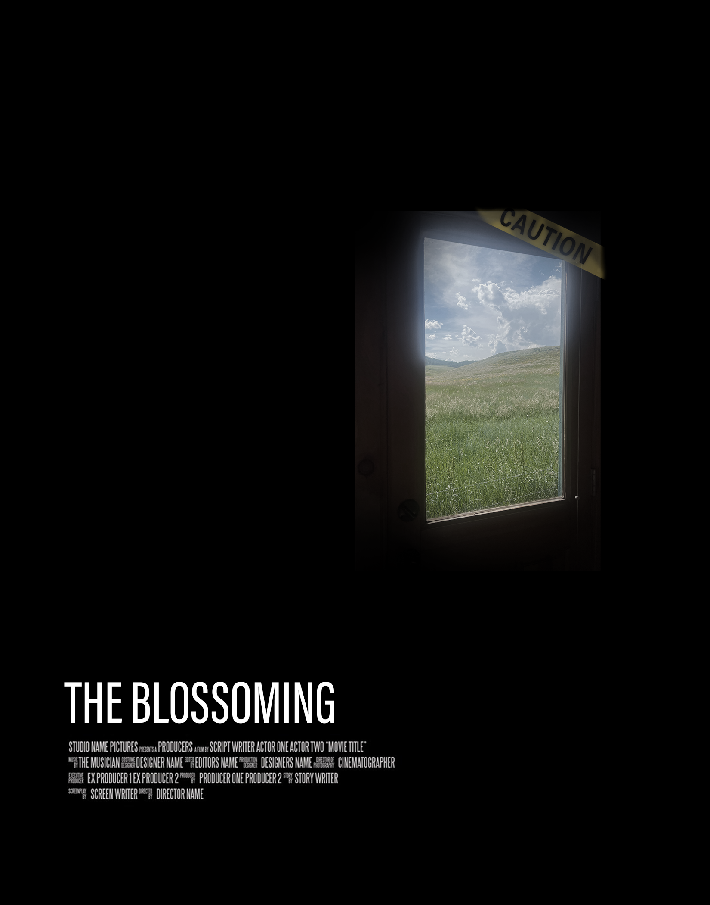
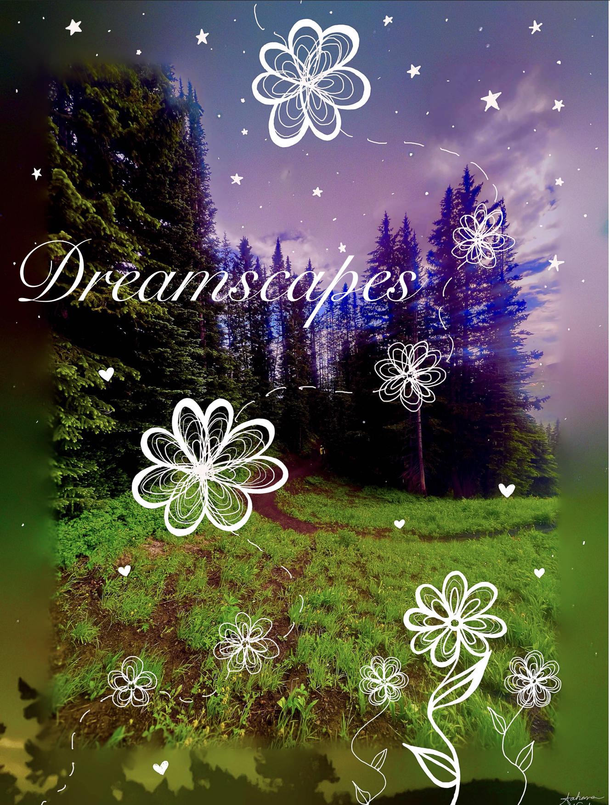
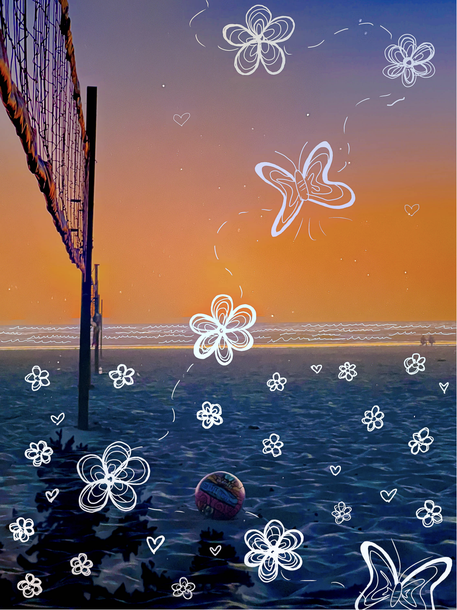
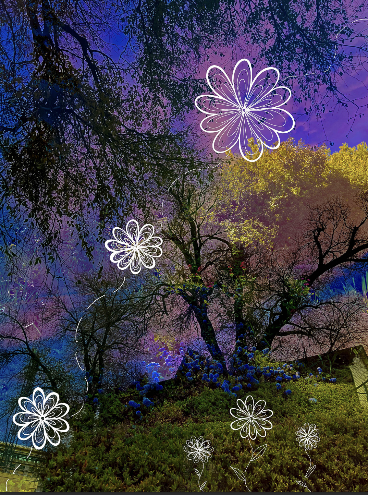
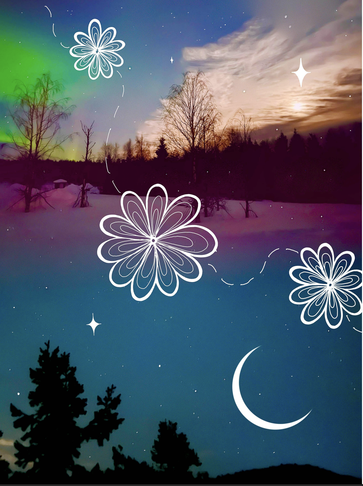
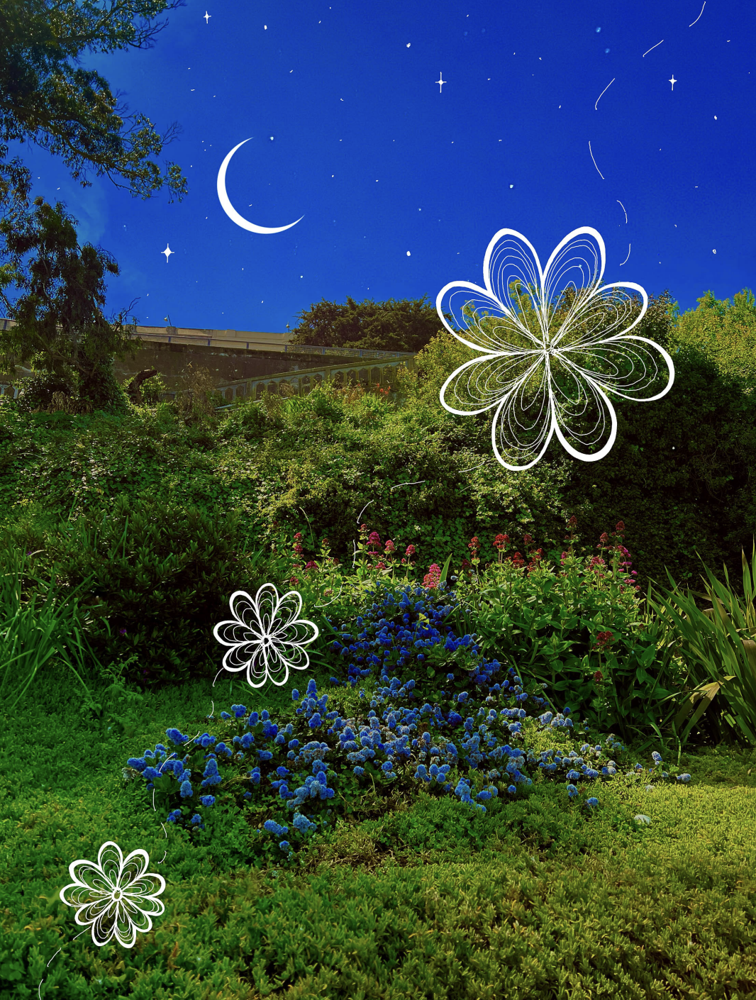
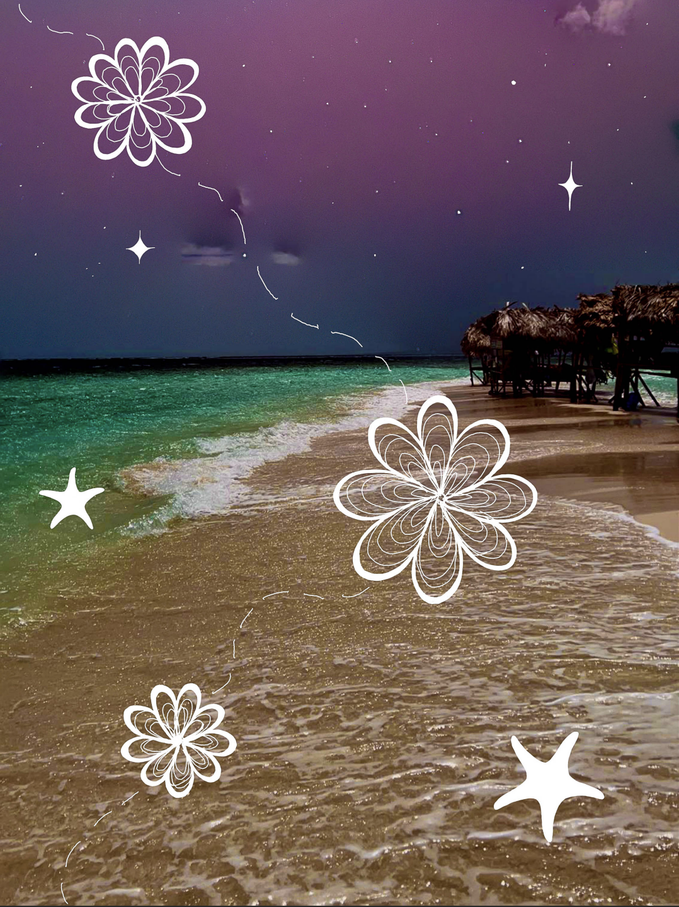

2020 U.S. Election Data Journey:
In the Fall of 2024 I collaborated on a group project in my Information Ecosystems course taught by Dr. Leisya Palen.
Through gathering a wide range of data from various sources related to the 2020 U.S. election, including voter turnout,
demographics, absentee/ mail-in voting, and more. By analyzing and combining these data points, we created a comprehensive
information flow that mapped how each data element contributed to the larger picture of the election process.

The Information Work of the CU Ambassadors:
In the Fall of 2024, my classmates and I conducted an in-depth ethnographic study of the CU Student Ambassadors,
the group that organizes all student tours on campus. We used a combination of interviews, observations, and other sources
to build comprehensive social world models of the organization. With these models and observations, we were able to break down
the organization's information workflow, and from there, we created a detailed data journey map.

Resolution App:
In the Spring of 2024, I collaborated with a team of students in the Designing Interactions course taught by Prof. Stephen Voida,
to design an app aimed at enhancing productivity and scheduling. The Resolution app is designed to help users maintain mental and physical
health by creating personalized schedules, setting reminders, and connecting with like-minded people. My role involved
brainstorming key features, defining user personas, and conducting user research.

The Blossoming:
In the Fall of 2024, I took on my first ever Design Challenge in the Design Foundations course taught by Prof. Joel Swanson.
With a movie genre and name assigned to me, I designed a murder documentary poster for the movie
"The Blossoming", using original photography and Photoshop.

Reframing Portrait:
In the spring of 2025, for my Image class with Professor Sheiva Rezvani, I created a collection of portraits for a Reframing Portraits project.
Given creative freedom for the assignment, I used my photography skills and photo-editing software to reframe the concept of a portrait.
The project culminated in a ten page book filled with these created portraits. I named the collection, "Dreamscapes,"
where I blended different nature photos to transform their landscapes into a dreamier realm.





